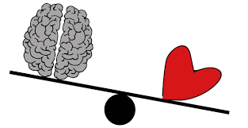

- 
-

-


La Inteligencia Emocional es uno de los conceptos clave para comprender
el rumbo que ha tomado la psicología en las últimas décadas.
De un modelo preocupado fundamentalmente en los trastornos mentales
por un lado y por las capacidades de razonamiento por el otro,
se ha pasado a otro en el que se considera que las emociones son algo intrínseco
a nuestro comportamiento y actividad mental no patológica y que, por consiguiente,
son algo que debe ser estudiado para comprender cómo somos.
Así pues, la Inteligencia Emocional es un constructo que nos ayuda a entender
de qué manera podemos influir de un modo adaptativo e inteligente tanto sobre nuestras emociones
como en nuestra interpretación de los estados emocionales de los demás.
Este aspecto de la dimensión psicológicca humana tiene un papel fundamental
tanto en nuestra manera de socializar como en las estrategias de adaptación al medio que seguimos.
Es un constructo que se refiere a la capacidad de los
individuos para reconocer sus propias emociones y las de los demás,
discriminar entre diferentes sentimientos y etiquetarlos apropiadamente,
utilizar información emocional para guiar el pensamiento y la conducta,
y administrar o ajustar las emociones para adaptarse al ambiente o conseguir objetivos.
Nely Peña Aguilar
Unibersidad Iberoamericana